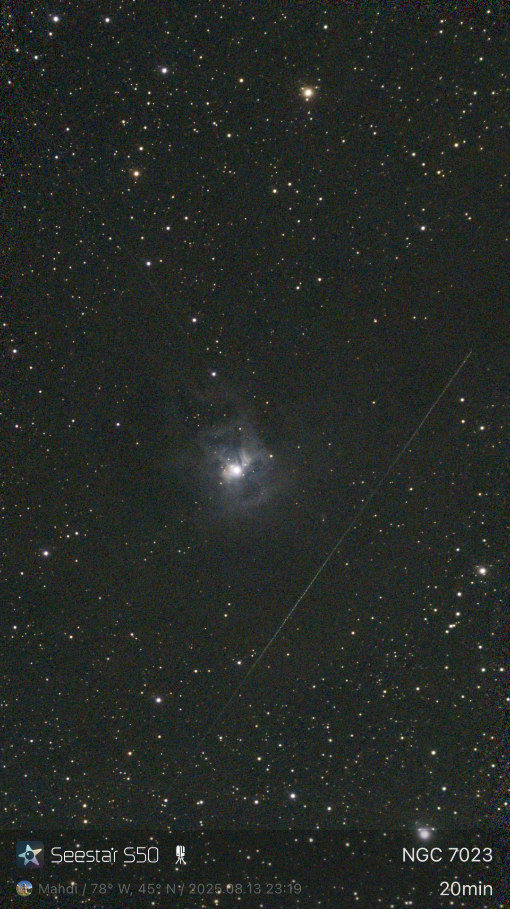
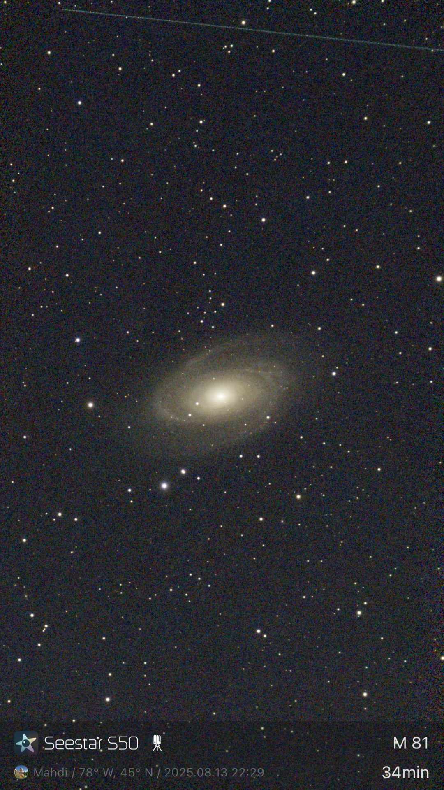
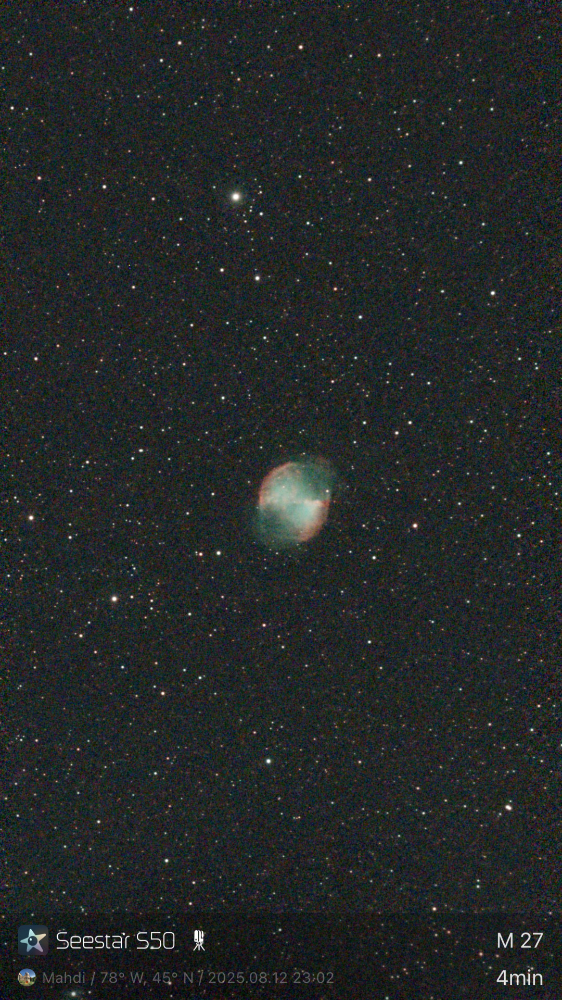
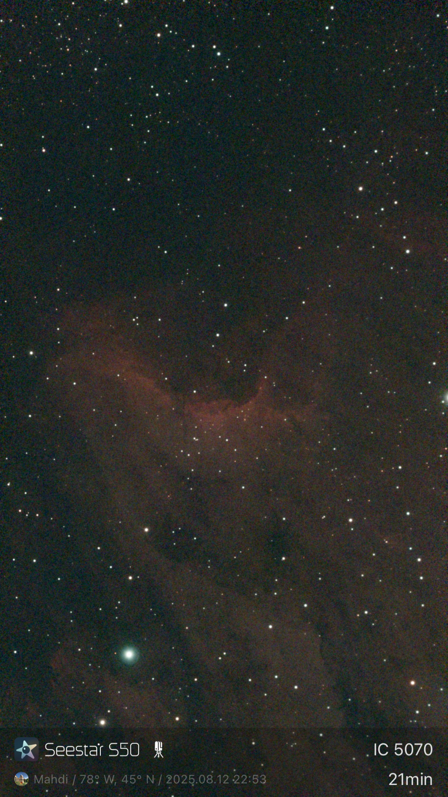
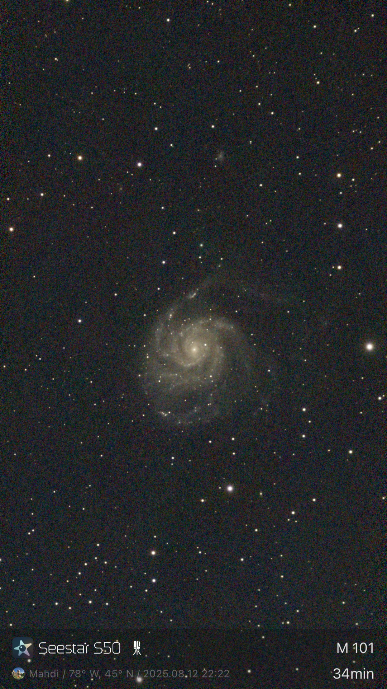
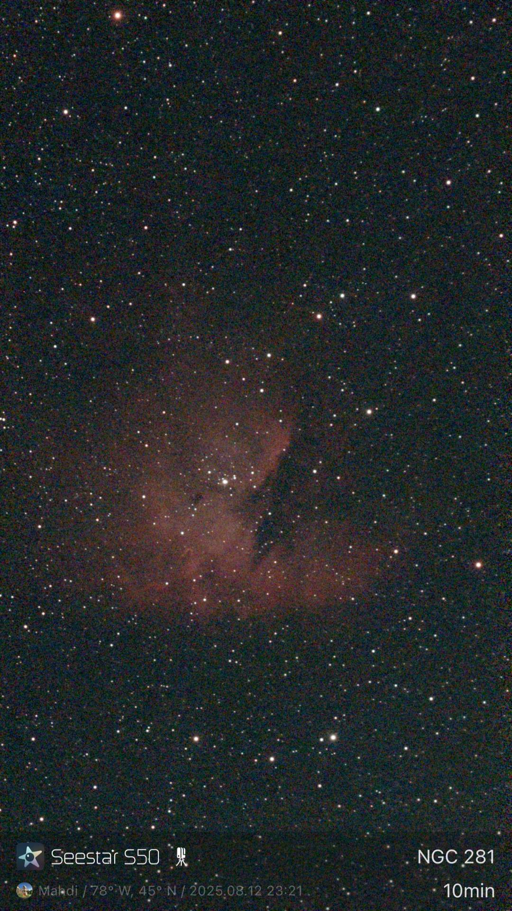
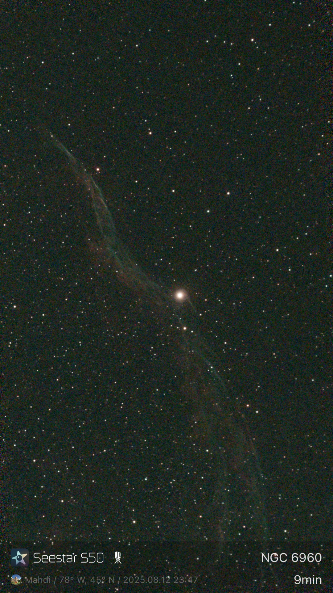

iris nebula - aug 2025

taken with seestar s50, original stacked photo. the streaks are shooting stars from the Perseid meteor shower that happens every year
grand design spiral galaxy - aug 2025

taken with seestar s50, original stacked photo. The streak at the top is a shooting star from the Perseid meteor shower that happens every year
dumbell nebula - aug 2025

taken with seestar s50, original stacked photo.
pelican nebula - aug 2025

taken with seestar s50, original stacked photo.
pinwheel galaxy - aug 2025

taken with seestar s50, original stacked photo.
pacman nebula

taken with seestar s50, original stacked photo. kinda can see the pacman here, but a better camera would mess it up.
veil nebula

taken with seestar s50, original stacked photo. personally my favourite.